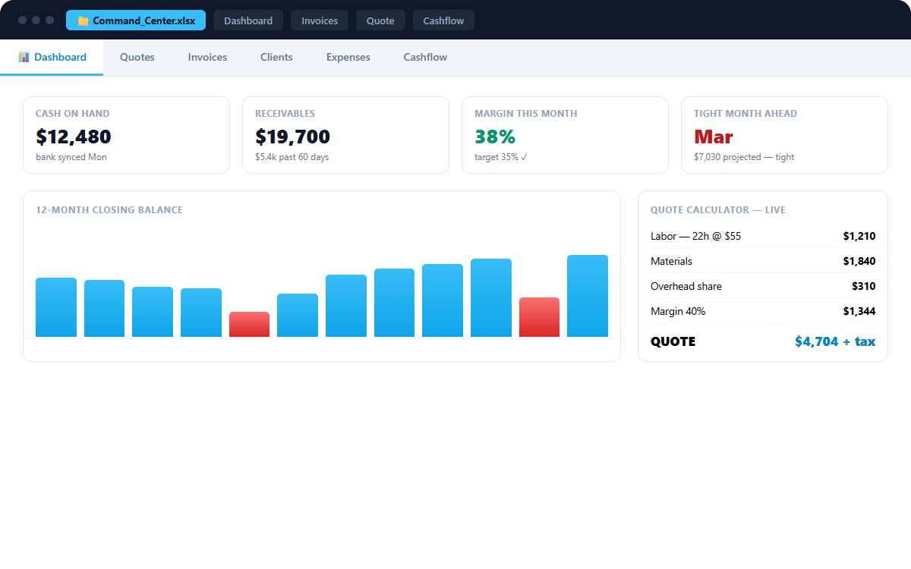

How to price your services with a margin calculator
What do you charge? Wrong question. What does delivery actually cost, all of it, and what margin does the market owe you on top?
"What do you charge?" is the wrong question. The right one is: "What does it cost me to deliver this: all of it: and what margin does the market owe me on top?" The math is ten minutes. Most people never do it.

The three prices every service business confuses
The rate you wish you made. What you'd charge if clients were reasonable and rent were optional. Emotional anchor, useless number.
Your cost. What the hour or job actually consumes: your wage baseline, plus every cost of existing as a business.
Your price. Cost plus a margin you chose on purpose — informed by what the market pays, but never discovered by guessing.
The classic pricing failure is skipping the middle step: pricing directly from "what seems high but sayable" to a number that quietly loses money after overheads, taxes, and unpaid admin time. The business looks busy all year and shows a loss, and the owner concludes they're bad at business. They're not. They priced blind.
Step one: find your true cost per hour
Take a normal month and add:
- Your take-home target — what you need to pay yourself
- Taxes and contributions on that income (add 25–35% depending on jurisdiction, or ask your accountant once)
- Fixed overheads: software, insurance, equipment amortization, workspace, phone
- Unpaid time: quoting, invoicing, chasing payments, marketing, learning. If you bill 25 of 40 hours, those 15 hours are a cost spread across the 25.
Divide by realistic billable hours — not theoretical hours, realistic ones. That number is your break-even rate. Below it, every hour of work makes your business poorer. Price against it knowingly or don't price at all.
Step two: margin, not markup (know the difference)
Invoices, clients, expenses, quotes and the 12-month forecast — linked and ready for your numbers. One-time price, lifetime updates, all sales final.
Command Center, $49 → Start free- Markup is on your cost: cost × 1.3 = +30% markup
- Margin is your share of the price: price = cost ÷ (1 − margin)
They diverge fast: 30% markup is only a 23% margin. When someone says "we run 30% margins" and you've been adding 30% markup, you are not in the same business. For services, think in margin: simple repeatable work should clear 30–50%; custom one-off work — where you eat the learning curve — should run 50%+ or be declined.
Step three: the per-job version
For anything bigger than an hour, price the job, not the clock. The margin calculator's four buckets:
1. Direct costs: materials, subcontractors, travel, disposables
2. Your labor: realistic hours × your true cost rate (from step one)
3. Overhead share: a slice of fixed costs proportional to job duration
4. Margin: applied to the total, by job type
Then sanity-check against your market band — too far above without differentiation is a sales problem; at or below the bottom means you've found a job someone else should have.
The quiet superpower: declining the wrong jobs
The calculator's most profitable output isn't a price — it's a no. The job at 8% margin that eats the week you could have sold at 45%. The "big client" whose volume comes at a margin your business can't survive. Once the number is on paper, turning these down stops feeling like lost revenue and starts feeling like what it is: protecting capacity for the work that actually funds your life.
Businesses that run this math report the same sequence: prices go up 10–20% on new quotes, a third of the worst clients quietly fall away, and revenue stays flat while profit climbs. Flat revenue with climbing profit is a trade worth making every time.
The calculator, prebuilt
The Quote Calculator inside the Small Business Command Center (instant download) runs this exact model: four-bucket costing, per-line margins, tax handling, and a print-ready quote at the end. Same system tracks the resulting invoices, so you can later compare quoted margin against what the job actually cost — the feedback loop that turns pricing from a guess into a skill.
Start with the free cashflow forecaster on the same page if you first want to see what your current pricing is doing to your bank balance.
Pricing framework, not accounting, tax, or legal advice. Works in Excel and Google Sheets.
Invoices, expenses, clients, quotes and a 12-month cashflow forecast — linked in one workbook. One-time price, lifetime updates, all sales final.
Buy the Command Center — $49 → Start with the free forecaster